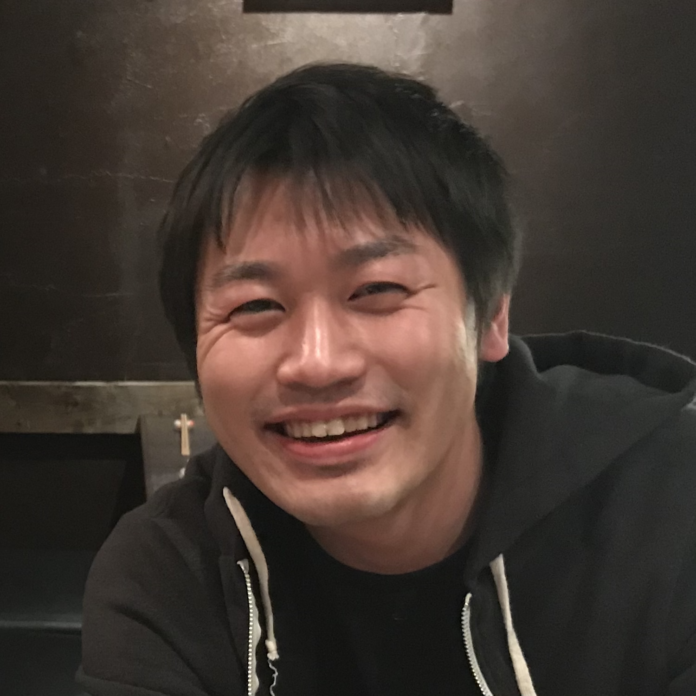
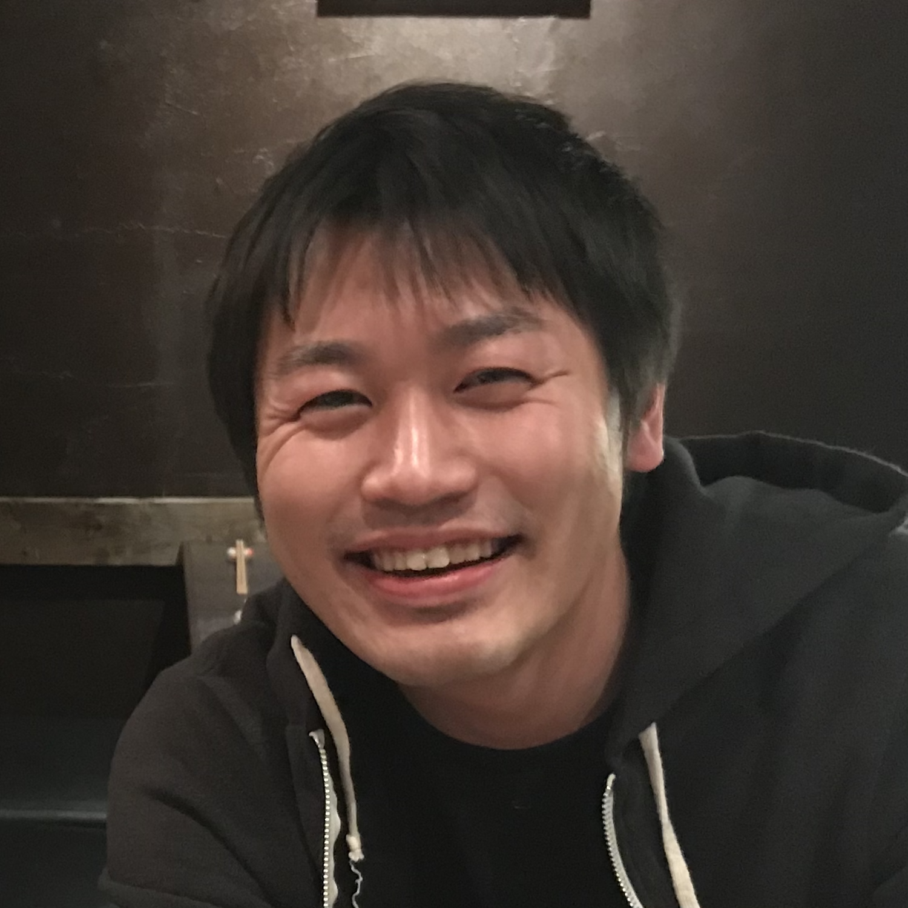
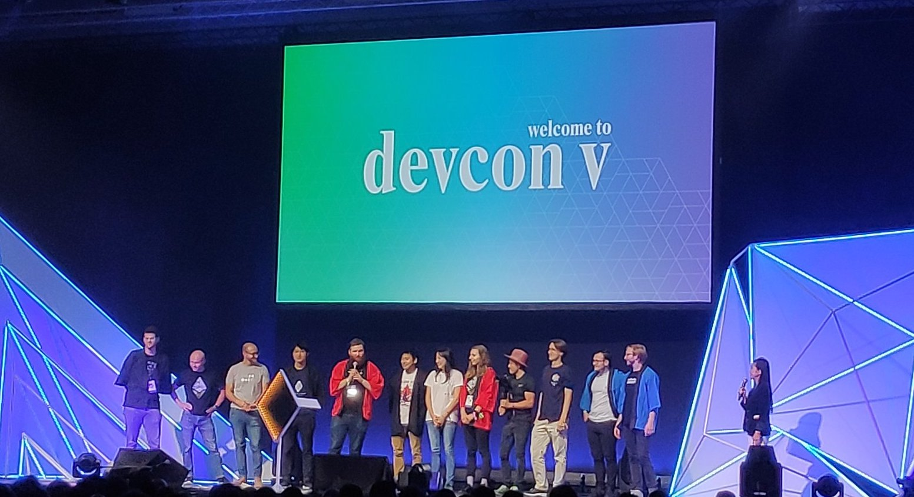

Mayato Hattori
Founder of DeFi Japan
Founder of DeFi Japan
I have completed Master in Management program at HEC Paris business school in France. In my second year, ... I did an exchange and took a MBA program at Babson College in USA. My master thesis was "Comparison of Millenial Entrepreneurs in Japan and America". I also took a gap year and did an internship at Deloitte consulting firm in Japan. At Deloitte, I was in a blockchain technology implementation team for entreprise.
(Read More)I graduated from Meiji University as a valedictorian. At Meiji, I put ... my most of effort in academic and practical work experience. I was elected as a university delegate and participated in economic conference held in York University and business case competition at KAIST in Korea. I also studied abroad at Seoul National University in Korea. In senior grade, I did a full year internship at Orbis Investment, fund management company based in Canada.
(Read More)I was hired by Ethereum Foundation ... to help lead up Devcon Ⅴ held in Osaka as a local coordinator assistant. I was mainly supporting local side of logistics such as putting together food map and local guide, coordinating necessary equipments for event and communicating with local firms.
As a community manager at Neutrino, ... blockchain focused coworking space founded by OmiseGO, I engaged into growth and expansition of blockchain community in Japan. I primary focused on building a core blockchain community where talented people from a diverse background such as engineers, international projects, startups, enterprise and regulator meet and collaborate. I facilitated many events and a few conferences to promote blockchain activity and education to wider audience.
(Read More)